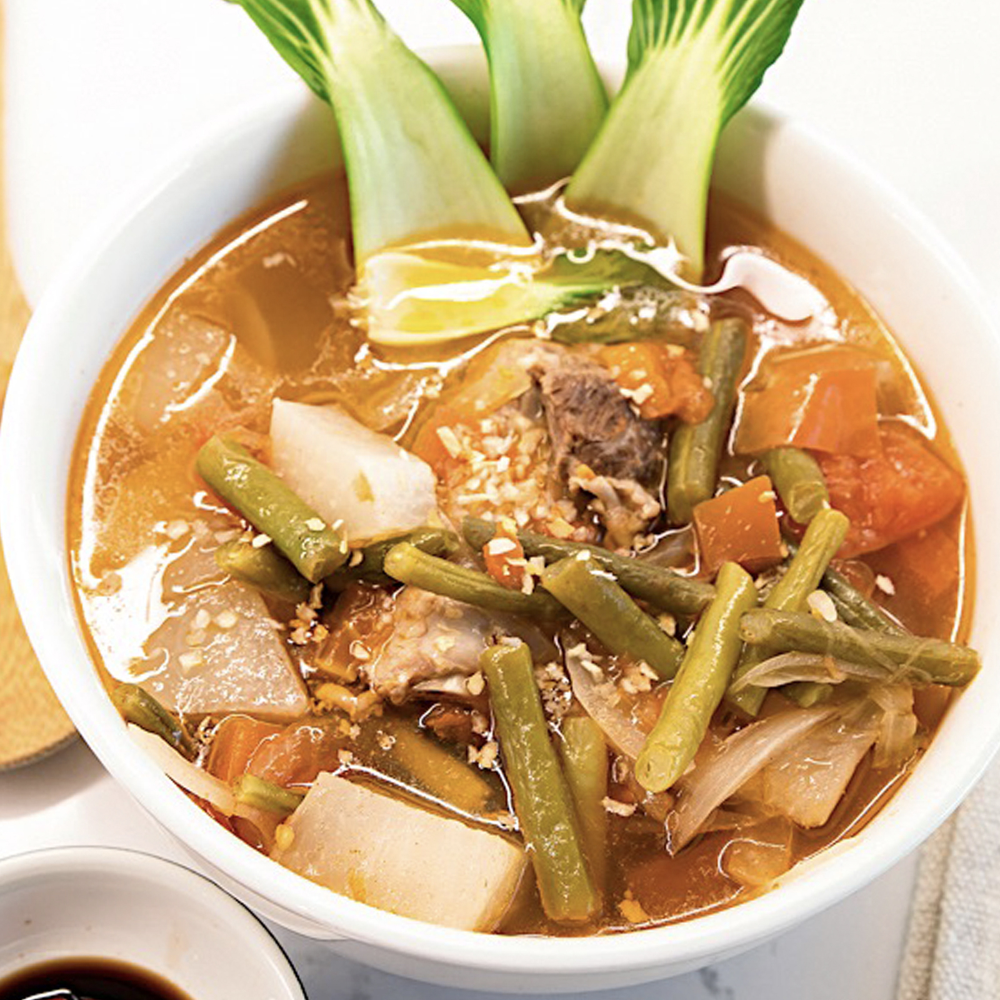
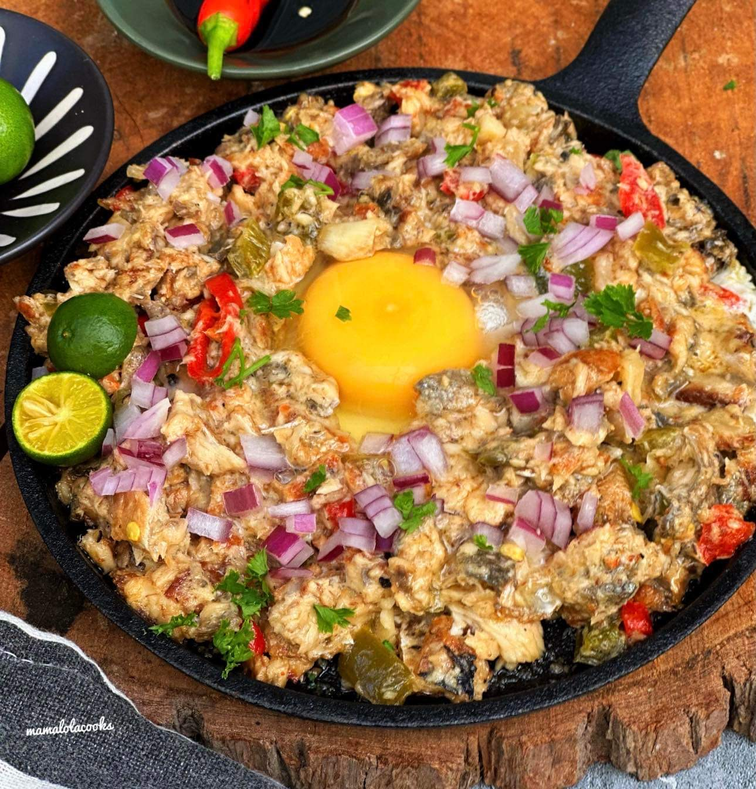
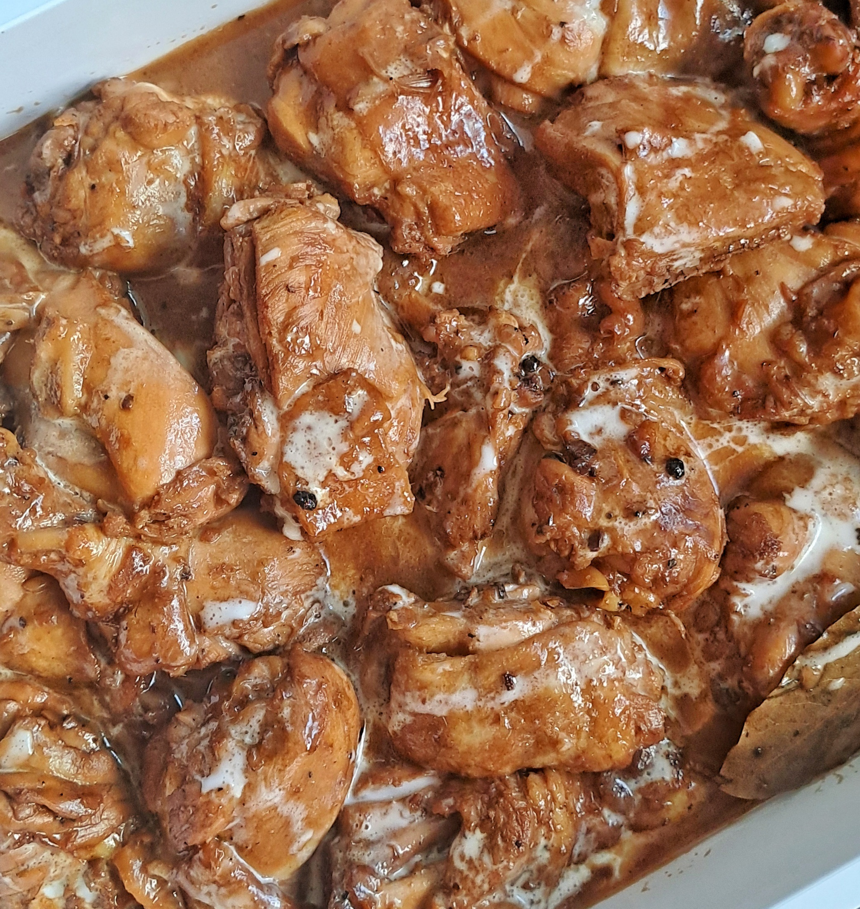

Food in the Philippines is more than nourishment; it embodies hospitality and community. Meals are often enjoyed family-style, fostering a sense of family. Filipino cuisine is a vibrant varieties of flavors, characterized by a harmonious blend of sweet, sour, and salty elements. Here are some examples that are rated the highest among the various Filipino dishes:
| Dish | Description | Rating |
|---|---|---|
|
Lumpiang Shanghai |
A savory, tangy Filipino dish known for its rich, flavorful sauce. It's often slow-cooked, allowing the meat to absorb the bold, comforting seasonings, making it a staple in Filipino cuisine. | 4.9 /5 (Highest) |
| 
Sinigang |
A tangy, comforting sour soup, typically served hot. It's a perfect balance of flavors, with a savory broth and vibrant acidity, often accompanied by a variety of vegetables. | 4.8 /5 |
| 
Sisig |
A sizzling dish made from finely chopped meat, often pork, that's seasoned with a mix of tangy, spicy, and savory elements. It's typically served on a hot plate, making it a popular, flavorful appetizer or main dish. | 4.4 /5 |
| 
Adobo |
A Filipino version of spring rolls, typically served as a snack or appetizer. These crispy, bite-sized rolls are often filled with a flavorful mixture, then fried to golden perfection. | 4.3 /5 |